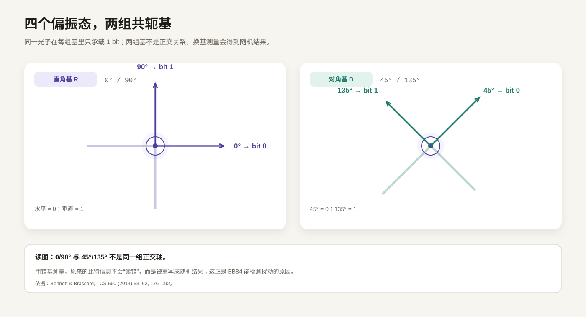
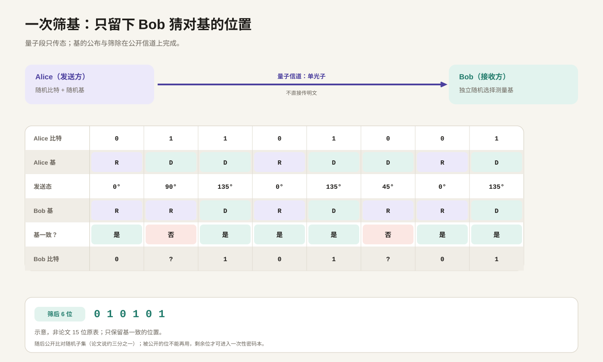
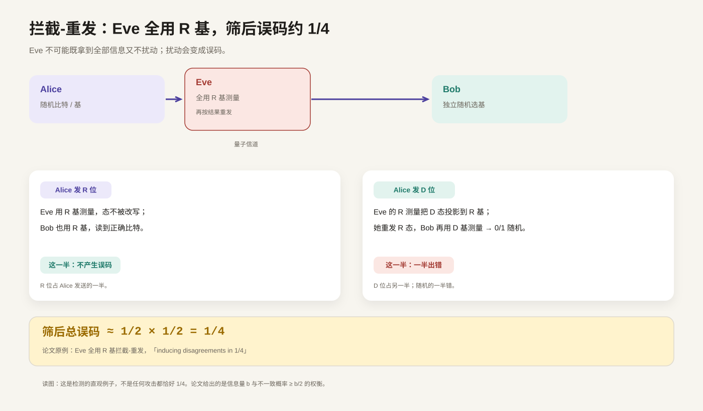

原理与机制
术语：BB84 协议（BB84 Protocol）。BB84 协议把量子信道当作随机比特的传送通道，而不是直接传消息。论文写：「In quantum public key distribution, the quantum channel is not used directly to send meaningful messages, but is rather used to transmit a supply of random bits between two users who share no secret information initially」。Alice 随机选比特与基，Bob 独立随机选测量基；随后两人在普通公开信道上核对哪些光子收到、哪些基猜对。未被扰动时，双方保留这些共同比特；论文写：「they agree to use these shared secret bits in the well-known way as a one-time pad」；若发现扰动，「they discard it and try again」。因此 BB84 的输出是共享随机密钥，不是密文，也不是数字签名。

为什么重要
安全性来自非正交量子态不能被可靠复制或区分。论文写：「when information is encoded in non-orthogonal quantum states, such as single photons with polarization directions 0, 45, 90, and 135 degrees, one obtains a communications channel whose transmissions in principle cannot be read or copied reliably by an eavesdropper ignorant of certain key information used in forming the transmission.」。窃听者若不知道发送基，就不能同时准确区分四个态；论文进一步写：「The eavesdropper cannot even gain partial information about such a transmission without altering it in a random and uncontrollable way likely to be detected by the channel’s legitimate users.」。克隆也不行：「such cloning can be shown to be inconsistent with the foundations of quantum mechanics」。所以 BB84 不是靠计算困难，而是靠物理扰动留下痕迹。
应用与实例
流程分两段：量子段传态，公开段筛基并抽样。论文写 Bob「obtains meaningful data from only half the photons he detects—those for which he guessed the correct polarization basis.」，所以只保留双方基一致的位置。随后两人公开比较一个随机子集：「The bit positions used in this comparison should be a random subset (say one third) of the correctly received bits」，用这些位检测扰动；被比较的位不能再用。若比较通过，剩余位「can safely be used as a one-time pad for subsequent secure communications over the public channel」。该条目只描述论文的协议步骤，不把筛后密钥当成已经经过现代隐私放大或认证的成品。

边界与攻击面
BB84 不是让窃听不可能，而是让窃听留下可测的误码。论文的拦截-重发例子是 Eve 全用 R 基测量并重发：她「thereby learning the correct polarizations of half the photons and inducing disagreements in 1/4」。但协议还有前提：公开信道「assumed to be susceptible to eavesdropping but not to the injection or alteration of messages」。如果攻击者能主动注入或篡改公开消息，就需要预先共享一个小密钥做认证；否则比较通过本身也可能被伪造。量子侧的界不是任何攻击都恰好 1/4，而是信息量与不一致概率之间的权衡。

历史与背景
论文原载 1984 年 12 月 10–12 日 Bangalore 的 International Conference on Computers, Systems & Signal Processing 会议论文集第 175–179 页；2014 年《Theoretical Computer Science》560 卷 7–11 页重新排版。重印本脚注写：「This paper appeared originally on pages 175–179 of the Proceedings of the International Conference on Computers, Systems and Signal Processing」，「exactly as it was in its original 1984 version, except for fresh typesetting」。因此该条目把 BB84 的公开文本断到 1984 年会议论文；2014 年是重印，不是新协议或新实验。
逐步示例与核验
定义检查模型
上位概念 → 区别特征 → 正例 → 反例 → 易混边界。正例必须落在外延内；反例必须刚好跨过边界；同义词不能代替定义。
参考出处
- Wikipedia search entry for BB84 协议. https://zh.wikipedia.org/w/index.php?search=BB84%20%E5%8D%8F%E8%AE%AE
- RFC 4949: Internet Security Glossary, Version 2. https://www.rfc-editor.org/rfc/rfc4949